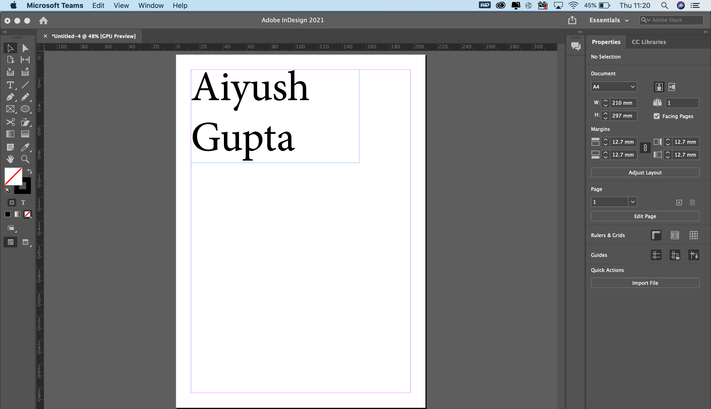
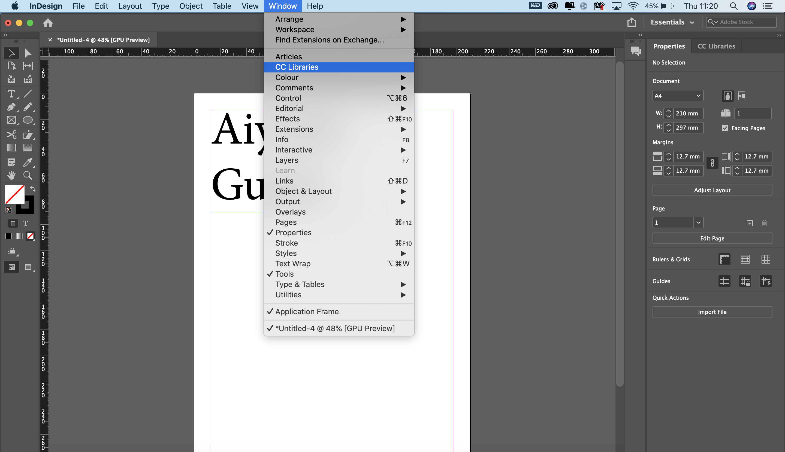
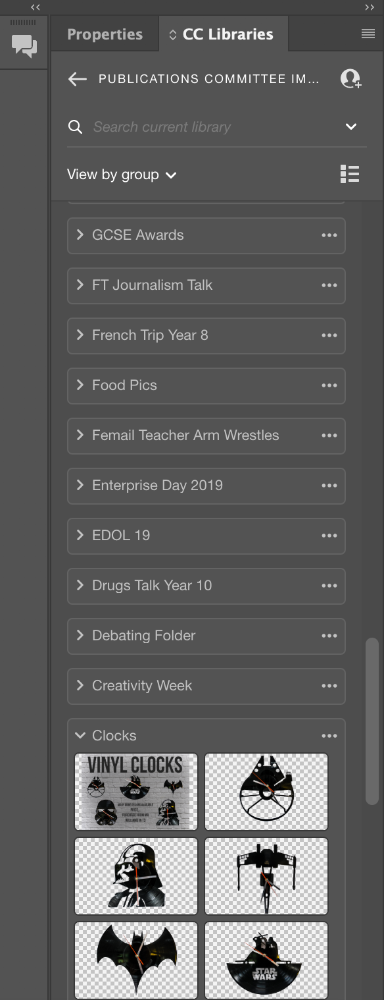
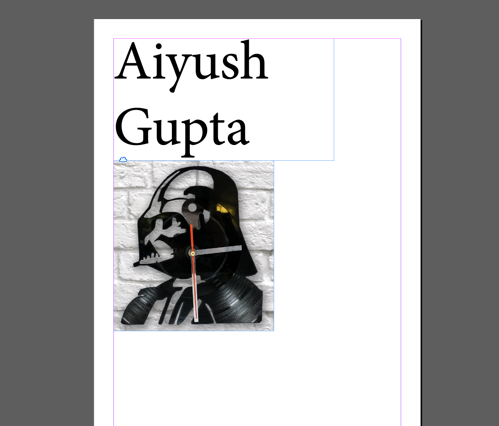

Back
Stock Images
Follow the instructions below to see how you can access, upload and contribute to our schools repository of images. If you don't have access to this library after following the steps email agupta17@agsb.co.uk or any other assistant editors.

Firsly open up Indesign

Then go to the top bar- window >> CC Libraries

This opens a library on the right hand side where you can drag and drop images, upload and modify these images. Please note that you shouldn't abuse this system. Everything that you upload to the library you need to also upload this to sharepoint. You should create a folder in the appropriate place in sharepoint with no nested folders within it. You should use a standard naming convention that follows [YEAR][EVENT NAME]

You can drag and drop these images into indesign and you can then save the documents normally.